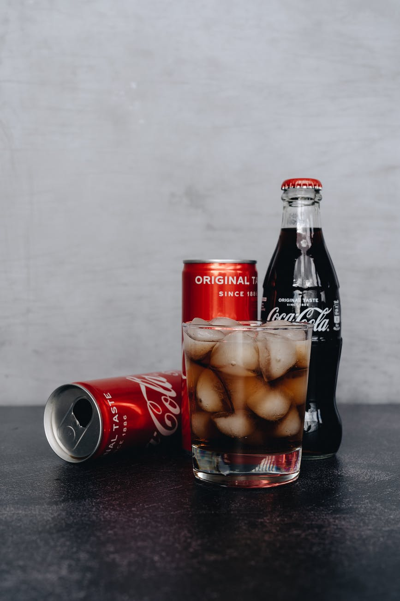
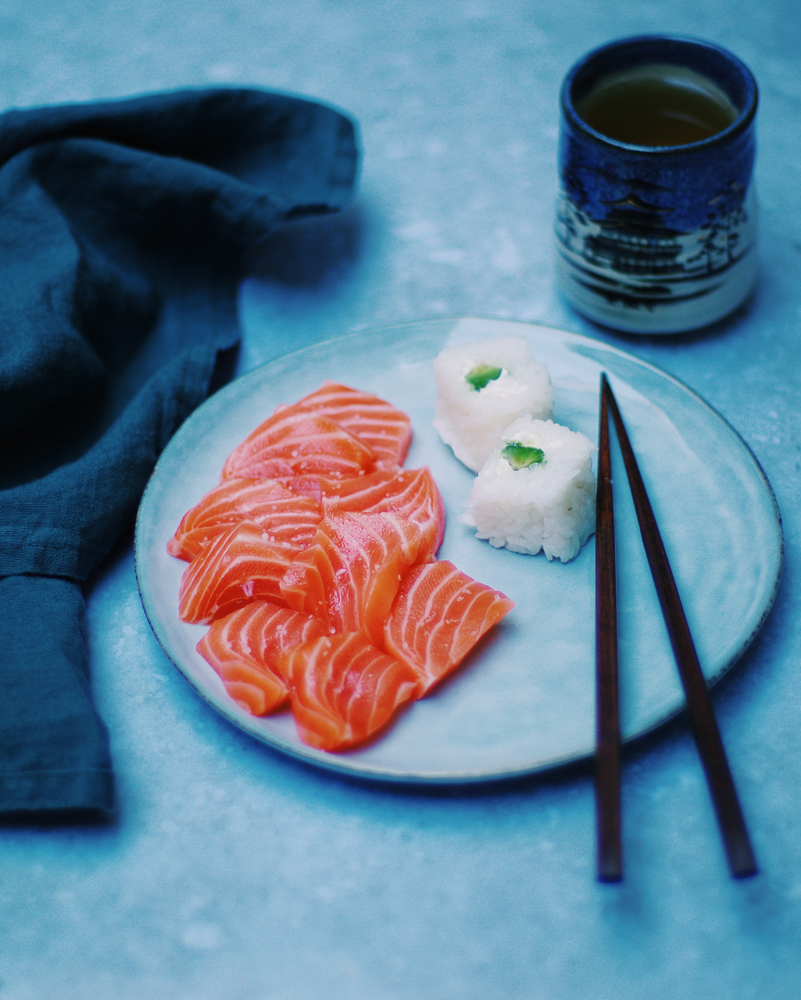
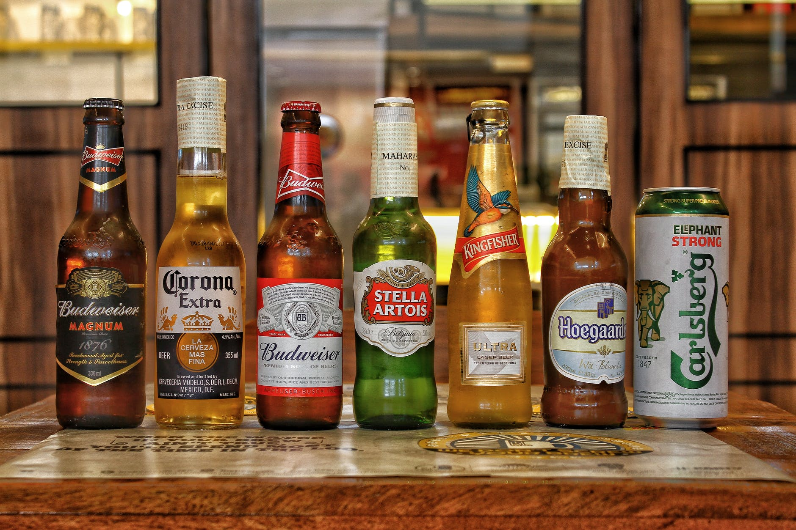
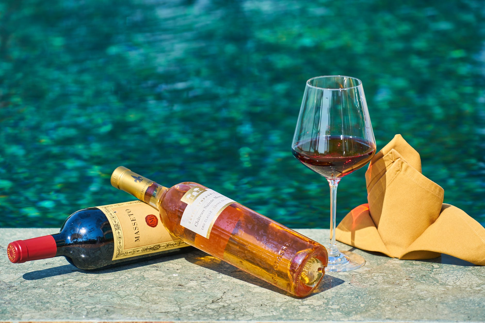
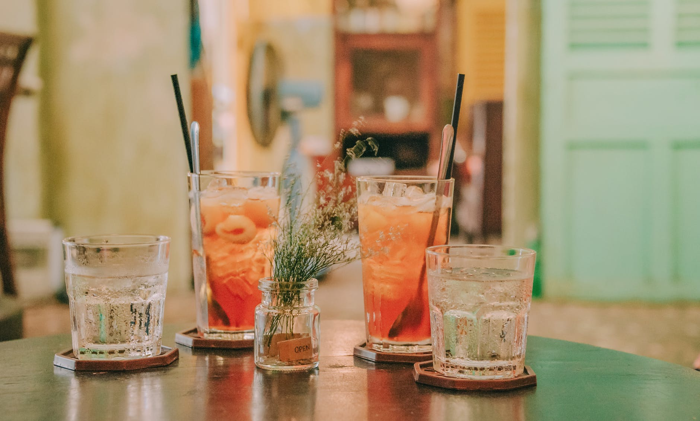
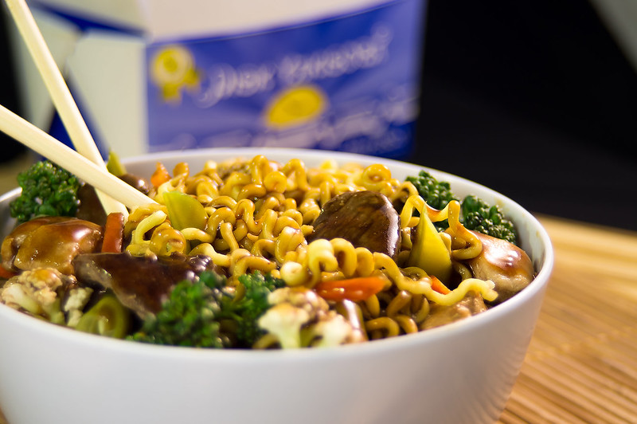
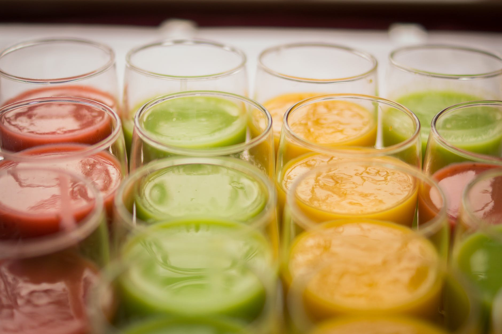

Sobre nós
Quando a gente abriu as portas, no final de 1990, existia na época uma demanda por lugares agradáveis, com cardápio variado e com bom atendimento. Fazendo sucesso há mais de duas décadas, ao longo dos anos, com a afirmação constante de sua filosofia fez com que a gente deixasse de ser um conceito para se consagrar em termos concretos, conquistando a aprovação do público, mas sempre instigando os apaixonados por gastronomia com suas revelações de sabores e ingredientes novos. O número restrito de clientes atendidos diariamente atesta o compromisso de oferecer o máximo em conforto e exclusividade. Temos como missão oferecer um serviço com excelência de qualidade em refeição fora de casa, encantando clientes e colaboradores. Acima de tudo, a gente se preocupa com a satisfação do cliente garantindo que sempre voltem em busca de boa comida, serviço de qualidade e ambiente moderno e agradável. Buscamos sempre a valorização das pessoas, excelência, foco no cliente, ética, modernidade, pioneirismo aliado a tradição e respeito ao meio ambiente. Durante todos esses anos nosso objetivo sempre foi só um: ser cada vez mais do seu jeito, buscando sempre ser um dos melhores restaurante que você já conheceu.
| Comidas | Bebidas |
|---|---|
Sashimi  |
Refrigerantes |
| Sushi  | Cervejas  |
Temaki  |
Vinhos  |
Tempurá  |
Drinks  |
| Yakisoba | Sucos  |